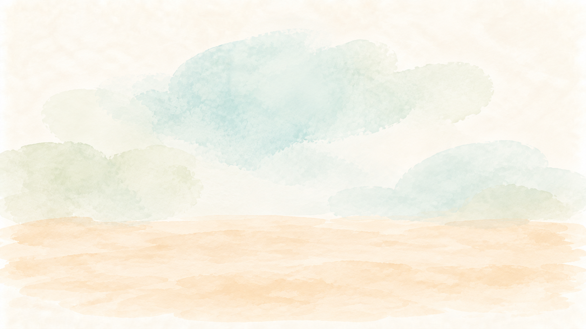

How to explore this CV
This is an illustrated CV. Marju's portrait opens her profile. Potatoes represent projects, a suitcase represents work experience, skill illustrations represent development and testing skills, speech bubbles represent languages, and books represent education. Each object is a labelled button that opens its details.
Use your screen reader's headings or buttons list to explore. With a keyboard, use Tab and Shift plus Tab to move between controls, and Enter or Space to open an item. When details open, reading starts at the heading. Press Escape or choose Close details to return to the same item. Course and project groups can be expanded. Language recordings play only when you choose Play.